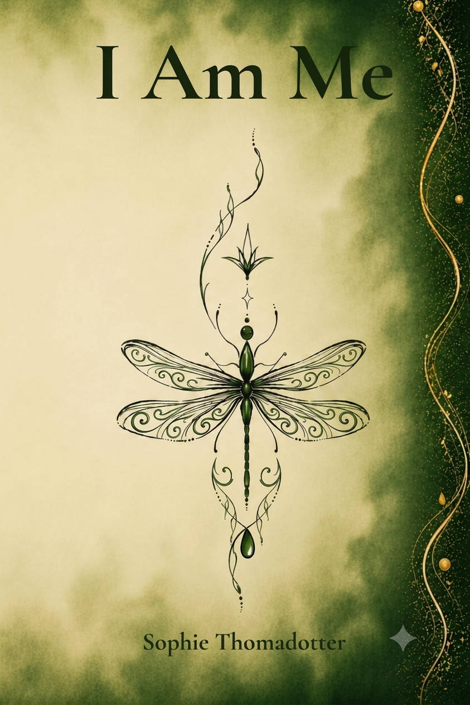

On love & loss
“Love doesn’t die when a person does. It only changes form.”
We don’t leave those relationships behind. We learn to carry them forward without the physical presence.
Her story
Behind every song, a chapter.
Sophie Thomasdotter is a songwriter, author and stroke survivor. Her work grows from real life — from loss and resilience, from healing, and from the long journey back to oneself.
Through honest lyrics and heartfelt storytelling, she reminds us of our strength, our worth, and the quiet power of beginning again.
“We’re all
more
than what we’ve been through.”
Fragments in her own voice
Words written in the quiet after the storm — about loss, self-worth, finding a voice, and beginning again.
On love & loss
“Love doesn’t die when a person does. It only changes form.”
We don’t leave those relationships behind. We learn to carry them forward without the physical presence.
On choosing herself
“Today, I choose myself.”
Not because I stopped loving — but because I finally chose to love the person who should always have come first.
On the noise
“You knew the way all along.”
The truth rarely shouts. It waits for the storm to settle, until you can hear your own voice again.
On beginning again
“Not from zero. From a new angle.”
New conditions. New tools. The same determination to keep moving — and perhaps help someone else find their way.
The art of becoming
Healing isn’t about becoming who you were. It’s about discovering who you can become.I AM ME · A LIFE STILL UNFOLDING
Music
Twelve songs. Twelve honest chapters.
Every song carries a piece of Sophie’s journey. Choose a chapter and listen here, or continue to Spotify.
Tap any cover to listen without leaving Sophie’s story.
Loading the Spotify player
The memoir
Some stories refuse to stay silent.
How much of yourself can you lose before you no longer recognize who you are?
Discover the memoir on AmazonCaught in a cycle of emotional abuse, manipulation, violence and self-destruction, she slowly lost sight of the person she once was. As a mother, she fought to protect her children while struggling to survive herself.
When a massive stroke forced everything to stop, it became impossible to ignore the truths she had spent a lifetime avoiding.
I Am Me is a raw and deeply personal memoir about finding the strength to reclaim your voice, your worth and your identity.
“I didn’t write to make myself a victim. I wrote to show that change is possible.”

A memoir of survival, motherhood and reclaiming your identity.
Be your own kind of beautiful.
A story about what she chose to become.
Stay close
Her work is still unfolding — as a writer, songwriter, survivor, and a future guide for those finding their own way back.